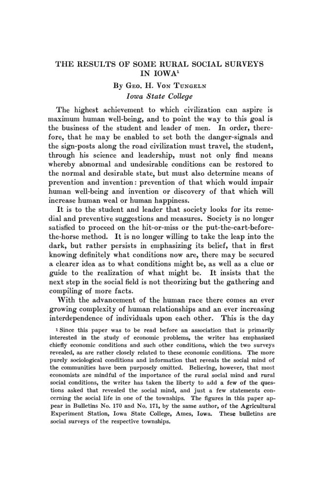

Columbus, 1916: o ponto de vista nacional, a terra e a guerra
Leitura: 6 min
Columbus, dezembro de 1916: Carver defende o ponto de vista nacional na economia, Ely pede um levantamento econômico da terra, e a reunião discute crédito rural, riqueza, ouro e finanças de guerra.


Na noite de 27 de dezembro de 1916, em Columbus, Ohio, a sessão de abertura da vigésima nona reunião anual da American Economic Association foi presidida por William Oxley Thompson, presidente da Ohio State University, e reuniu os discursos de três presidentes de associações. George E. Vincent, da American Sociological Society, falou sobre campo e nação; Irving Fisher, da American Association for Labor Legislation, sobre a necessidade do seguro-saúde. Thomas N. Carver, de Harvard, presidente da associação, abriu o seu com uma passagem de A riqueza das nações sobre a herança da terra.
O suplemento de março de 1917 reúne os textos e debates da reunião, que foi até 30 de dezembro. Boa parte das sessões tratou da terra; as demais, da concentração da riqueza, do ouro, das finanças de guerra e do salário mínimo. Do banquete no Columbus Athletic Club ficaram os textos de John Raymond Wildman, Roger W. Babson, James A. Field e Haviland H. Lund.
O que Carver pedia aos economistas?
Carver sustenta que a economia da satisfação dos consumidores e a do poder e da grandeza nacionais chegam a conclusões diferentes sobre as mesmas questões, da herança à distribuição da riqueza e à regulação do consumo e da palavra. Pede aos economistas que adotem o ponto de vista nacional. O discurso tem página própria.
Por que a terra ocupou tanto espaço?
Richard T. Ely, da University of Wisconsin, disse que os problemas econômicos mais graves vinham da propriedade fundiária e que a teoria da renda, ao tratar a terra como coisa única, pouco ajudava a resolvê-los. Propôs uma classificação detalhada da terra e um levantamento econômico completo; o texto e o debate têm página própria.
Henry C. Taylor, também de Wisconsin, separou a capacidade e a eficiência dos fatores de produção, com dados de 51 agricultores. George H. von Tungeln, do Iowa State College, apresentou levantamentos feitos casa a casa em dois municípios rurais. Paul L. Vogt, da Ohio State University, apontou o arrendamento crescente nas terras mais valorizadas como o verdadeiro problema da terra.
C. W. Thompson, do Departamento de Agricultura, explicou a lei federal de crédito rural de julho de 1916, que criou dois sistemas de bancos hipotecários: os federal land banks regionais, ligados a associações locais de tomadores, e os joint-stock land banks, de capital privado.
O que as estatísticas de riqueza diziam?
Allyn A. Young, da Cornell University, lembrou que não se sabia se a renda média das famílias americanas era de US$ 1.200 ou de US$ 1.600 e argumentou que os números da concentração mostram um corte transversal de um processo em que concentração e difusão andam juntas. Willford I. King, de Wisconsin, pediu um órgão central de estatística e séries mensais de salários por hora, horas de trabalho, emprego e preços ao consumidor.
Como pagar a guerra, e o que viria depois dela?
George E. Roberts, de Nova York, estimou em perto de US$ 1 bilhão o ouro ganho pelos Estados Unidos desde o início do conflito e previu preços permanentemente mais altos. O. M. W. Sprague, de Harvard, propôs financiar uma guerra sobretudo com impostos sobre a renda, e não com empréstimos, que expandem o crédito bancário e elevam os preços. James E. Le Rossignol, da University of Nebraska, concluiu que o salário mínimo tende a dispensar os trabalhadores menos eficientes, tanto mais quanto mais alto for.
Que decisões a associação tomou?
A assembleia elegeu John R. Commons presidente para 1917 e, por proposta de B. H. Hibbard, autorizou uma comissão sobre colonização de terras. O secretário registrou 2.489 sócios e assinantes, com ganho líquido de 47, o primeiro desde o aumento da anuidade de três para cinco dólares.
Na minha leitura
Na minha leitura, a reunião de Columbus tem um fio de método: a desconfiança em relação às categorias agregadas. Ely recusa a terra como fator único; Taylor separa duas dimensões onde se via uma; Young pergunta o que um índice de concentração realmente mede; King quer as quatro séries que compõem a renda do assalariado, e não uma média só.
Mesmo o discurso de Carver trata de uma escolha anterior à análise: o critério pelo qual se julga uma política. Satisfação presente dos consumidores ou capacidade futura da nação levam a respostas diferentes, e o economista precisa dizer qual critério está usando.
Glossário
- Ponto de vista particularista
- nos termos de Carver, o que julga as políticas pela satisfação dos indivíduos e grupos vivos, e não pelo interesse da nação.
- Primogenitura
- regra de herança que passa a terra indivisa ao filho mais velho.
- Imposto único (single tax)
- proposta de Henry George de tributar o valor da terra e dispensar os demais impostos.
- Incremento não ganho
- aumento do valor da terra que não resulta do trabalho ou do capital do dono.
- Escada agrícola
- sequência de posições, de trabalhador assalariado a arrendatário e proprietário, pela qual se chega à posse da terra.
- Federal land bank
- banco hipotecário regional criado pela lei de 1916, que empresta por meio de associações locais de tomadores.
- Joint-stock land bank
- banco hipotecário de capital privado autorizado pela mesma lei, que empresta diretamente ao agricultor.
- Imposto sobre lucros extraordinários
- imposto sobre o excesso de lucro ou renda em relação a um período anterior de referência.
- Padrão-ouro de câmbio
- regime em que a moeda se mantém conversível em ouro com reservas pequenas e créditos no exterior.
Artigos (31)
- The National Point of View in Economics: Annual Address of the President — Thomas N. Carver, Harvard University; discurso presidencial (pp. 3–17). Carver parte de uma passagem de A riqueza das nações sobre a herança da terra: quando ela é vista só como meio de subsistência e prazer, divide-se entre todos os filhos; quando é meio de poder e proteção, passa indivisa a um. Daí a tese de que a economia da satisfação dos consumidores e a economia do poder e da grandeza nacionais chegam a conclusões diferentes sobre as mesmas questões. Ilustra o ponto com a primogenitura, com a espada herdada e com a parábola dos talentos. Do ponto de vista nacional, a regulação do consumo, como a proibição do álcool, e a da palavra tendem a acompanhar a regulação dos negócios; a riqueza deveria ser distribuída segundo a capacidade de usá-la produtivamente e de investir, e não segundo as necessidades; e o governo deveria proteger a produção contra a predação. Na segunda parte, Carver defende o sentimento nacional, comparável ao familiar, como o motivo que leva cada geração a sacrificar-se pelas que ainda não nasceram, e conclui que uma democracia só sobrevive se for capaz de disciplinar a si mesma. JSTOR · ler o comentário
- Landed Property as an Economic Concept and as a Field of Research — Richard T. Ely, University of Wisconsin (pp. 18–33). Ely afirma que os problemas econômicos mais graves vêm da propriedade fundiária e que os tratados pouco ajudam a resolvê-los, porque buscam uma teoria única da renda para a terra tratada como coisa simples, de Adam Smith a Marshall. Com a definição jurídica de Tiedeman, mostra que a terra reúne solo, minerais, água e direitos que podem pertencer a donos diferentes, camada por camada. Propõe então uma classificação “suficiente” para o início do século XX: pelo suprimento de água, a partir do relatório de J. W. Powell de 1878 sobre as terras áridas; pela apropriação subterrânea ou de superfície; entre terra urbana e rural; pela forma de propriedade; e pela qualidade, que nos Estados Unidos deveria ter bem mais de trinta classes. A segunda parte lista campos de pesquisa, da terminologia da renda à socialização da terra, à tributação, à escada agrícola e às reformas da Irlanda e da Nova Zelândia, e apresenta cinco teses a testar, entre elas a de que não há paz permanente até que a maior parte da terra seja cultivada pelo próprio dono. Pede um levantamento econômico completo da terra. JSTOR · ler o comentário
- Landed Property as an Economic Concept and as a Field for Research: Discussion — Frank A. Fetter, E. Dana Durand, B. H. Hibbard, Roy G. Blakey, R. R. Bowker, John A. Ryan e Richard T. Ely (pp. 34–48). Fetter considera a propriedade fundiária um conceito jurídico, não econômico, e pergunta em que momento o minério ou a madeira natural se tornam capital. Durand sustenta que parte da renda da terra superior não é ganha pelo dono e defende tributar os aumentos futuros de valor. Hibbard trata das restrições históricas à venda de terras; Blakey aponta uma inconsistência em Durand; R. R. Bowker pede o estudo das quedas de valor, como as de bairros de Nova York; Ryan apoia um imposto gradual sobre os aumentos futuros. Ely encerra com o caso de um comerciante de Madison que preferiu ações de banco a dois lotes urbanos, para perguntar qual dos dois ganhos seria o “não ganho”. JSTOR · ler o comentário
- Two Dimensions of Productivity — Henry C. Taylor, University of Wisconsin (pp. 49–57). Taylor distingue duas dimensões na utilidade de qualquer fator de produção, tão diferentes quanto comprimento e largura: a capacidade, quantidade de outros fatores que ele absorve com resultado ótimo, e a eficiência, produto por unidade desses fatores. A produtividade é a resultante das duas. Com um levantamento de 51 agricultores perto de Dallas, no condado de Barron, em Wisconsin, mostra que o retorno por dólar de despesa anual ia de 76 centavos a US$ 3,05 e que não havia relação definida entre a escala com que cada um operava e sua eficiência. Dados do concurso de vacas leiteiras de Wisconsin de 1909 a 1911, com 398 animais, e de 26 vacas registradas do mesmo rebanho, sob o mesmo manejo, mostram variação semelhante. Como as avaliações individuais dos fatores divergem das de mercado, a escolha do grau de cada fator importa, e a concorrência tende a pôr as vacas mais eficientes nas mãos dos produtores mais eficientes. A variação de eficiência entre agricultores é, para Taylor, o que permite poupar e subir na escada agrícola até a propriedade da terra. JSTOR
- Two Dimensions of Productivity: Discussion — E. Dana Durand, Allyn A. Young, J. G. Thompson e Frank A. Fetter (pp. 58–61). Durand pergunta se os dados de um único ano são típicos; Taylor responde que o levantamento seria repetido na mesma comunidade por vários anos. Allyn A. Young observa que capacidade e eficiência não são independentes: com produtividade decrescente, o agricultor capaz de operar em escala maior pode exibir produto médio por dólar menor. J. G. Thompson sugere trocar “capacity” por “intake” e defende, do ponto de vista da comunidade, o uso dos fatores em quantidades menores por muitos produtores. Fetter diz que a teoria econômica tem muito a aprender com os economistas agrícolas, os contadores de custos e os estatísticos. JSTOR
- The Results of Some Rural Social Surveys in Iowa — George H. von Tungeln, Iowa State College (pp. 62–86). Von Tungeln define o levantamento social como um inventário da comunidade, feito para ser devolvido a ela, e descreve o método de Iowa: consulta prévia ao agente do condado e às lideranças, votação pela comunidade, uma comissão local de apoio e entrevistas casa a casa, com os pesquisadores morando entre as famílias. Os dados vêm de dois municípios do norte do estado, Orange, no condado de Blackhawk, e Lone Tree, no de Clay, e foram publicados nos boletins 170 e 171 da estação experimental. O texto compara proprietários e arrendatários: tamanho das fazendas, distância ao centro comercial, parentesco com o senhorio, que em Orange alcançava quase metade dos arrendatários, expectativa de tornar-se dono, compras por reembolso postal, organizações, seguros, conveniências domésticas e igrejas. Em Orange, de agosto de 1910 a agosto de 1915, o preço médio por acre das terras vendidas passou de US$ 156 para US$ 200. O autor encerra com a vida social de Orange como exemplo do que uma comunidade rural pode fazer pelo próprio bem-estar. JSTOR
- Some Rural Social Surveys: Discussion — Paul S. Peirce, State University of Iowa; resposta de George H. von Tungeln (pp. 87–90). Peirce descreve três levantamentos semelhantes feitos por estudantes de pós-graduação no sul e no sudeste de Iowa, em áreas de ocupação mais antiga e fazendas menores, de 132 acres em média. Elogia o método de cooperação com a comunidade, mas defende estudar também os municípios médios e atrasados, publicando comparações sem identificá-los, e adverte contra levantamentos amplos demais e contra tabulações sem interpretação. Pergunta quais seriam os critérios do bem-estar rural. Von Tungeln responde que saber das conveniências domésticas importa tanto quanto saber o que o agricultor lê. JSTOR
- The Land Problem and Rural Welfare — Paul L. Vogt, Ohio State University (pp. 91–101). Vogt lembra que o problema da terra americana deixou de ser pôr terra livre em mãos privadas e passou a ser pô-la nas mãos de quem a cultiva, a qualquer custo. Analisa dois aspectos: o tamanho das propriedades e a relação entre propriedade e operação. No primeiro, conclui que as grandes propriedades em áreas de agricultura geral são sobrevivências de um período anterior e que a tendência é para as fazendas médias, salvo em madeira, minérios e energia hidráulica, onde a concentração é mais séria. O problema real seria o arrendamento, que crescia no Centro-Norte, nas terras mais valorizadas, com envelhecimento dos arrendatários: num condado antigo de Ohio, mais de 65% deles tinham 35 anos ou mais. A separação entre propriedade e operação divide a renda da terra e tende a dar ao senhorio uma parte crescente e permanente. Vogt considera insuficientes as medidas paliativas, vê a lei de crédito rural como passo certo, mas sujeito a elevar o preço da terra sem legislação contra a especulação, e propõe usar o poder de tributar para induzir os proprietários ausentes a vender aos arrendatários. JSTOR
- The Land Problem and Rural Welfare: Discussion — W. O. Hedrick, James B. Morman, George H. von Tungeln e Charles L. Stewart (pp. 102–114). Hedrick observa que o censo de 1910 mostrou crescimento notável das fazendas de 500 a 999 acres e que o arrendamento combina fatores de duas empresas. James B. Morman examina os dois aspectos tratados por Vogt e cita a limitação legal do tamanho das propriedades na Austrália e na Nova Zelândia. Von Tungeln argumenta que a primeira compra de terra mais tardia reflete em parte a educação mais longa dos futuros agricultores. Charles L. Stewart lembra que uma fazenda de 160 acres em Illinois valia então US$ 30.000, mais que o dobro de uma ou duas décadas antes, o que alonga naturalmente o caminho até a propriedade. JSTOR
- The Federal Farm Loan Act — C. W. Thompson, Departamento de Agricultura dos Estados Unidos (pp. 115–131). Thompson reconstitui a origem da lei federal de crédito rural: a queda do rendimento do capital agrícola, as duas comissões que estudaram o crédito rural na Europa em 1913, o projeto da comissão, com bancos por ações independentes, e o projeto das comissões de Banking and Currency, com bancos regionais e associações locais de tomadores. A lei, aprovada pelo presidente em 17 de julho de 1916, combinou os dois: doze federal land banks regionais, com capital mínimo de US$ 750.000 subscrito pelo Tesouro se os particulares não o fizessem, e joint-stock land banks privados. Em ambos, empréstimos com primeira hipoteca até 50% do valor da terra e 20% das benfeitorias seguradas, de 5 a 40 anos, amortizados em prestações, com juros de até 6%; os títulos, isentos de impostos, rendem até 5%. Para Thompson, os bancos federais servem ao agricultor que precisa melhorar sua garantia, e os por ações, a quem já a tem. Adverte contra esperanças exageradas de eliminar o arrendamento e conclui que o sucesso dependerá do padrão de crédito estabelecido e mantido pelos bancos e pela supervisão federal. JSTOR
- The Federal Farm Loan Act: Discussion — Kingman N. Robins e James B. Morman (pp. 132–143). Kingman N. Robins, de Rochester, classifica os princípios da lei em construtivos e destrutivos; entre os últimos, o privilégio da isenção de impostos dos títulos, que daria à obrigação do agricultor uma vantagem de até 2% ao ano em estados como Ohio, com o ônus transferido a outras classes. James B. Morman atribui a lei a um compromisso imposto por poucos homens entre um sistema cooperativo de tomadores e um sistema capitalista de credores, contesta a ideia de que os dois tipos de banco atendam classes diferentes de agricultores e conclui que, resolvidos seus problemas, a lei promete corrigir muitos abusos do crédito hipotecário. JSTOR
- Do the Statistics of the Concentration of Wealth in the United States Mean What They Are Commonly Assumed to Mean? — Allyn A. Young, Cornell University (pp. 144–156). Young pergunta se as estatísticas da concentração da riqueza significam o que se supõe. Não se sabe se a renda média das famílias americanas é de US$ 1.200 ou de US$ 1.600, nem se os 2% mais ricos recebem um quarto, um quinto ou um sexto da renda nacional, mas os contornos gerais são claros. Quatro considerações atenuam a força desses números: são o corte transversal de um processo em que concentração e difusão ocorrem juntas, porque o progresso gera um excedente disputado antes de se difundir; o próprio sentido de concentração é incerto; dados completos ainda omitiriam fatos pertinentes; e a margem de incerteza é grande. Young aponta um deslize de Pareto na interpretação de seu índice de desigualdade, que diminui, e não aumenta, com a desigualdade, e considera-o um índice pobre. Defende o método de acumulação, e não o das vendas realizadas, para registrar ganhos de capital, e diz que as estatísticas de espólios exageram a desigualdade porque os mortos são mais velhos e, em geral, mais ricos que os vivos. Pede um estudo completo da distribuição de propriedade e renda, aproveitando o novo imposto de renda. JSTOR
- Desirable Additions to Statistical Data on Wealth and Income — Willford I. King, University of Wisconsin (pp. 157–171). King observa que há estatísticas sobre quase tudo, mas não sobre riqueza e renda dos americanos em forma contínua e sistemática. Os órgãos oficiais, com verbas limitadas, seguem formulários antigos, duplicam trabalho e raramente publicam séries comparáveis; não se sabe, por exemplo, se o preço da hora de trabalho subia mais para trabalhadores rurais ou para mineiros. Sugere repetir e estender os estudos de espólios de Massachusetts e melhorar as estimativas baseadas em avaliações fiscais, que subestimam os valores. Para acompanhar a renda dos assalariados, diz que é preciso conhecer quatro coisas por indústria e ocupação: o salário por hora, as horas por semana, as semanas de emprego por ano e os preços dos bens comprados, além de um índice geral ponderado de preços. Sugere usar os carteiros, que conhecem quase todas as comunidades, para coletar os dados. Propõe que uma comissão conjunta das associações de estatística e de economia defina os problemas e os dados necessários e que um único órgão central publique as médias mensalmente, com a regularidade dos boletins do Weather Bureau. JSTOR
- The Statistics of the Concentration of Wealth: Discussion — Davis R. Dewey, George E. Roberts e Robert L. Hale (pp. 172–175). Davis R. Dewey duvida do total de US$ 188 bilhões estimado pelo censo para a riqueza nacional de 1912, mais que o dobro dos US$ 89 bilhões de 1900, e atribui parte do aumento à inflação dos valores. George E. Roberts argumenta que a desigualdade medida está na propriedade produtiva, cujos benefícios chegam a todos pelos preços, e que a distribuição real deve ser medida no consumo. Robert L. Hale responde que, por esse raciocínio, não haveria por que se preocupar com o roubo, e enumera razões para a preocupação com a desigualdade, entre elas o desvio da produção para os desejos supérfluos dos ricos. JSTOR
- The Situation of the United States at the Close of the European War, with Special Reference to the Gold Supply — George E. Roberts, Nova York (pp. 176–191). Roberts examina o deslocamento internacional de ouro causado pela guerra. Segundo estimativas do Tesouro, os Estados Unidos ganharam perto de US$ 1 bilhão em ouro desde o início do conflito, mais de 50%, e os países neutros, cerca de US$ 1,5 bilhão; os bancos centrais dos beligerantes também aumentaram reservas, recolhendo ouro da circulação e de entesouramentos. Noruega, Suécia e Dinamarca autorizaram seus bancos centrais a recusar ouro, para evitar especulação e inflação. Nos Estados Unidos, os empréstimos bancários cresceram mais de US$ 1 bilhão num ano, e a disputa de um capital crescente por uma oferta limitada de trabalho elevava salários e preços. Depois da guerra, com a volta dos exércitos à indústria e a queda mais rápida dos custos na Europa, Roberts espera saldo comercial contrário e saída de ouro. Duvida das propostas de substituir o padrão-ouro por um padrão de mercadorias, lembra que a rupia indiana se mantinha no padrão-ouro com reserva pequena e conclui que a situação monetária favorece um nível de preços permanentemente mais alto que o de antes da guerra. JSTOR
- Gold Supply at the Close of the War: Discussion — Murray S. Wildman, E. M. Patterson, Don C. Barrett e George E. Roberts (pp. 192–198). Murray S. Wildman, de Stanford, prevê uma saída de ouro curta logo após a guerra, seguida do retorno e da retenção de mais que a parte normal americana. E. M. Patterson, da University of Pennsylvania, vê a saída como algo a controlar, não a temer, e lembra que os Estados Unidos tinham sido o mercado de ouro mais livre do mundo, incapaz de atraí-lo ou retê-lo quando precisavam. Don C. Barrett, do Haverford College, espera perdas consideráveis, ao menos temporárias, porque a indústria dos beligerantes passaria por um reajuste maior. Roberts esclarece que não espera perder todo o ouro ganho durante a guerra. JSTOR
- Loans and Taxes in War Finance — O. M. W. Sprague, Harvard University (pp. 199–213). Sprague sustenta que financiar a guerra com empréstimos não difere tanto da emissão de papel-moeda quanto se supõe. Como as subscrições sempre superam a poupança corrente, parte delas é feita com crédito bancário, e essa expansão de notas e depósitos é a causa mais forte da alta de preços na guerra; o governo disputa bens e trabalho com os cidadãos, as rendas mudam bruscamente e os ganhos inesperados de alguns estimulam o luxo. Propõe financiar a guerra o mais possível com impostos: 90% de toda renda acima da média dos dois anos anteriores à guerra, extensão do imposto sobre lucros extraordinários, e um imposto de guerra sobre a renda comum, de 5% sobre US$ 1.500 até 50% sobre US$ 40.000, com toda renda acima de US$ 100.000 tomada pelo Estado, além de impostos sobre açúcar, fumo, bebidas e gasolina. Um empréstimo inicial seria necessário, e o sistema exigiria um imposto de renda já em funcionamento na paz. As vantagens seriam preços estáveis, justiça entre os cidadãos, menos antagonismo de classe e um país em melhor posição para o pós-guerra. JSTOR
- Loans and Taxes in War Finance: Discussion — E. T. Miller, H. L. Lutz, Edmond E. Lincoln, T. K. Urdahl e O. M. W. Sprague (pp. 214–223). E. T. Miller, da University of Texas, discute os aspectos monetários e fiscais do texto. H. L. Lutz, do Oberlin College, concorda com o princípio de pagar à medida que se gasta e diz que ele é desrespeitado também na paz. Edmond E. Lincoln, de Harvard, chama a atenção para a destruição e a criação de capital como medida do custo financeiro da guerra. T. K. Urdahl, da University of Wisconsin, aceita a análise, mas duvida que algum governo consiga aplicá-la. Sprague responde que suas conclusões não dependem de nenhuma hipótese particular sobre a relação entre moeda e preços. JSTOR
- The Place Which Accounting Should Occupy in Any Scheme of National Preparedness — John Raymond Wildman, New York University (pp. 224–228). Wildman entende a preparação econômica como a capacidade de manter o país entre os líderes do mundo, com população próspera, e não apenas como problema de guerra. Cita o desperdício de recursos naturais: segundo o Departamento de Agricultura, a madeira era cortada três vezes mais depressa do que crescia. Define a contabilidade como análise, classificação e correlação de fatos financeiros passados que servem de base à política futura, e lembra que faltavam ao país dados financeiros nacionais: o censo era infrequente, e vários órgãos do Departamento de Comércio coletavam informações com sobreposição. Quem quisesse avaliar o fundo de comércio de uma empresa não tinha onde encontrar o retorno médio do setor. Propõe controle federal da contabilidade das empresas, com relatórios padronizados, e registra que há quem veja na Federal Trade Commission o poder necessário para isso. O resultado mostraria como o empresário médio distribui sua receita entre fornecedores, trabalhadores, senhorios, banqueiros e lucro, e permitiria legislar sobre tarifas pelo custo de produção, ajustar o imposto de renda e organizar a economia em caso de guerra, com o governo à frente da cooperação com a indústria. JSTOR
- Security Prices and the War — Roger W. Babson, Wellesley Hills, Massachusetts (pp. 229–232). Babson analisa os preços dos títulos depois da guerra por quatro forças: a demanda e a oferta de títulos ao longo do ciclo de prosperidade, sua atratividade como investimento e o valor do dinheiro, que dependia dos movimentos de ouro. Pelas estatísticas de compensações bancárias, construção, empréstimos, comércio exterior e preços, conclui que o fim da guerra coincidiria com o fim do período de prosperidade e prevê queda de 25% a 50% no preço de muitas mercadorias nos doze meses seguintes. Daí três conclusões: as ações americanas cairiam à medida que a paz fosse descontada; os títulos de longo prazo tributáveis cairiam se a guerra acabasse logo, mas talvez subissem se ela durasse mais dois ou três anos, conforme o destino das dívidas europeias; e as taxas do papel comercial de primeira linha ficariam praticamente iguais, porque a perda de reservas pela exportação de ouro compensaria o excesso de fundos ociosos. Os títulos isentos de impostos, como os novos títulos do crédito rural, continuariam muito procurados. JSTOR
- Problems of Population After the War — James A. Field, University of Chicago (pp. 233–237). Field apresenta possibilidades, e não profecias, sobre a população depois da guerra. As mortes concentradas em homens em idade militar distorcem a estrutura etária e o equilíbrio entre os sexos, reduzem a proporção de produtores em relação aos consumidores e, para o autor, podem ter efeitos seletivos duradouros. Lembra que guerras anteriores mudaram políticas populacionais, como na França depois de 1871, quando a doutrina malthusiana perdeu prestígio. Como a guerra moderna depende cada vez mais da indústria e das finanças, a força militar pode não estar onde a população mais cresceu. Os impostos para a defesa e as dívidas de guerra concorrem com as despesas com filhos e podem restringir ainda mais a natalidade onde a família pequena é voluntária. Nos Estados Unidos, prevê que a nova riqueza do comércio de guerra afete o equilíbrio da natalidade entre as classes, destaca o papel das mulheres no debate sobre população e defende uma política nacional de população, que poderia incluir benefícios de maternidade e reconhecer que a paternidade tem interesse público. JSTOR
- The Redistribution of the Labor Now Employed in Producing War Supplies — Haviland H. Lund, Nova York (pp. 238–250). Lund fala pela Forward-to-the-Land League sobre a redistribuição dos trabalhadores das fábricas de munição depois da guerra. Parte de uma carta de Carver: depois da Guerra Civil, as leis de homestead de 1862 e 1864 absorveram a mão de obra liberada pelos exércitos, e uma política semelhante seria necessária. Critica os corretores de terras, que vendiam lotes nas fábricas exigindo a maior entrada possível e deixando o comprador sem recursos para equipar a fazenda, e cita audiências em San Francisco segundo as quais ninguém lucrava com a agricultura se não tivesse comprado a terra anos antes. Propõe tratar a venda de terras como serviço de utilidade pública, com preços padronizados e lucro controlado, e assentar as pessoas em comunidades rurais organizadas de pelo menos cinquenta famílias. A liga mantivera em Nova York um escritório de informações e cursos noturnos de agricultura dados pela extensão da faculdade estadual de agricultura. Lund relata uma tentativa de criar uma colônia numa grande cidade do Sul, com resolução de levantar US$ 250.000 e oferta de terras por uma ferrovia, interrompida por vendedores de terras, e pede aos economistas que apoiem um plano comum. JSTOR
- Some Phases of the Minimum Wage Question — James E. Le Rossignol, University of Nebraska (pp. 251–274). Le Rossignol distingue a regulação das condições de trabalho, comparável à de pesos e medidas, da fixação do salário, comparável à fixação do preço do trigo. Na primeira, um ônus tende a ser transferido aos trabalhadores em salários menores; na segunda, se não puder ser absorvido pelo empregador nem repassado ao consumidor, leva a produção menor e à dispensa dos trabalhadores menos eficientes. A análise supõe um salário normal por unidade de eficiência e depende das elasticidades da oferta e da demanda de trabalho. Examina sobretudo a experiência de cerca de vinte anos da Nova Zelândia e da Austrália, além de casos na Inglaterra e em estados americanos, e conclui que o salário mínimo não produziu os desastres previstos pela teoria, mas tende, outras coisas iguais, a limitar o emprego marginal e a dispensar os menos eficientes, tanto mais quanto mais alto for. Não vê prova de que ele aumente a eficiência dos antes ineficientes. O melhor resultado do movimento teria sido chamar a atenção para a eficiência, a aprendizagem, a formação profissional e a classificação dos trabalhadores. Lembrando a legislação medieval inglesa de salários máximos, admite que um Estado favorável aos assalariados possa reforçar seu poder de barganha. JSTOR
- Some Phases of the Minimum Wage: Discussion — A. B. Wolfe, Robert L. Hale e John A. Ryan (pp. 275–281). A. B. Wolfe, da University of Texas, considera a experiência ainda curta demais para julgamentos indutivos, critica uma teoria neoclássica que, na prática, perpetuaria o laissez-faire e diz que análise econômica e idealismo ético não devem ser separados. Robert L. Hale, de Columbia, argumenta que não há diferença essencial entre uma lei que obriga a trabalhar e uma que proíbe algo, já que a lei de propriedade impede o sem-propriedade de comer sem o consentimento de algum dono. John A. Ryan diz que o texto é mais favorável ao salário mínimo do que se esperaria de quem tinha aquela posição dez anos antes e, como Wolfe, aproxima a crítica de Taussig da antiga doutrina do fundo de salários. JSTOR
- Minutes of Business Meetings at Columbus: December 28 to 30, 1916 — Atas das reuniões administrativas (pp. 282–283). Atas das duas reuniões administrativas, em 28 e 30 de dezembro, no Hotel Deshler, presididas por Carver. Foram aprovados os relatórios anuais e o da comissão sobre métodos de organizar os programas. Elegeram-se John R. Commons para presidente, James E. Le Rossignol, Murray S. Wildman e George Ray Wicker para vice-presidentes e Allyn A. Young para secretário e tesoureiro. A assembleia agradeceu à Ohio State University e a outras entidades de Columbus, mandou publicar um diretório dos professores de economia sócios, autorizou a comissão executiva a estudar uma reorganização da associação para cooperar com sociedades afins e, por proposta de B. H. Hibbard, a nomeação de uma comissão sobre colonização de terras. JSTOR
- Report of the Secretary for the Year Ending December 19, 1916 — Allyn A. Young, secretário (pp. 284–285). Young relata a única reunião da comissão executiva no ano, em 14 de outubro, no Harvard Club de Nova York. Ela aprovou uma comissão de cinco membros sobre coordenação, eficiência e economia na tributação, presidida por R. R. Bowker, pediu ao conselho editorial que estudasse uma revista bimestral de reimpressões e resumos para uso nos cursos elementares e autorizou um levantamento do ensino de economia nas escolas secundárias. Foram nomeadas comissões sobre o ensino secundário, sobre a monografia premiada, com F. W. Taussig, M. B. Hammond e H. J. Davenport, e sobre o investimento de fundos da associação. No ano, entraram 266 sócios e 53 assinantes, e saíram 272, entre desistências, endereços perdidos, falta de pagamento e 21 mortes; o ganho líquido de 47 elevou o total a 2.489. Foi o primeiro ano com ganho desde o aumento da anuidade de três para cinco dólares, e o secretário espera crescimento contínuo depois que as listas foram depuradas. Entre os mortos estão Robert F. Hoxie, James J. Hill, sócio vitalício, e Paul Leroy-Beaulieu, sócio honorário. JSTOR
- Report of the Treasurer For the Year Ending December 19, 1916 — Allyn A. Young, tesoureiro (pp. 286). O tesoureiro apresenta o movimento de caixa do ano encerrado em 19 de dezembro de 1916. O saldo inicial era de US$ 3.417,89. As receitas somaram US$ 12.634,59: US$ 9.736,69 de anuidades, US$ 500 de anuidades vitalícias, US$ 1.683,53 de assinaturas, US$ 408,21 de venda de publicações e US$ 302,66 de juros. As despesas chegaram a US$ 11.756,53. As publicações levaram US$ 8.973,07, dos quais US$ 7.696,31 com a American Economic Review, entre impressão, editoria e despesas, e o restante com os anais, o Handbook e gastos diversos. O escritório do secretário custou US$ 2.666,96, incluídos salários de US$ 1.765,65 e a reunião anual; seguro e armazenagem de publicações completam as saídas. O ano terminou com US$ 4.295,95 em caixa, a maior parte no Central Trust Company e o restante no Ithaca Trust Company. O balanço patrimonial e a demonstração de resultado do exercício ficam para o relatório da comissão de auditoria, publicado em seguida. JSTOR
- Report of the Auditing Committee — Donald English, Robert A. Campbell e Abbott Payson Usher (pp. 287–288). A comissão de auditoria certifica em Ithaca, em 22 de dezembro de 1916, que as contas do secretário-tesoureiro do exercício encerrado em 19 de dezembro foram examinadas em detalhe por assistentes sob sua direção e conferem com o balanço. Os ativos somam US$ 9.489,17, entre eles US$ 4.216,95 em contas de poupança, US$ 3.000 em títulos da cidade de Nova York e da United Fruit Company, US$ 1.767,70 de anuidades a receber e US$ 275 em móveis do escritório. O excedente acumulado chega a US$ 8.079,42, depois de baixas de anuidades em atraso e de contas incobráveis. A demonstração de resultado separa a receita ordinária, de US$ 10.396,85 entre anuidades líquidas e juros, das despesas ordinárias, de US$ 2.701,95. As publicações custaram mais do que renderam em assinaturas e vendas, com excesso de despesa de US$ 6.859,39. Feitas as reservas para anuidades em atraso e contas incobráveis, o superávit líquido do ano foi de US$ 285,51. JSTOR
- Report of the Managing Editor of the American Economic Review for the Year Ending December, 1916 — Davis R. Dewey, editor-gerente (pp. 289–290). Dewey informa que não houve mudanças marcantes na direção editorial da revista. O volume de 1916 teve 1.024 páginas, contra 1.003 em 1915. O custo total foi de US$ 7.694,06, com US$ 1.500 de salário do editor, US$ 1.423 de pagamentos a colaboradores e US$ 1.173,93 de assistência de escritório, além da impressão. A alta do papel encareceu o ano: aos preços anteriores, a impressão teria custado US$ 190,91 menos, e, se a alta persistisse, o custo da revista subiria cerca de US$ 500, a cobrir com verba maior ou com economias e menos páginas. O relatório lista o conselho editorial, com F. A. Fetter e H. E. Mills em fim de mandato, e as mudanças nos resumos de periódicos: A. N. Young, de Princeton, passou a colaborar na seção de teoria, e C. A. Phillips, do Dartmouth College, substituiu D. C. Barrett na de moeda e bancos. Tabelas anexas mostram, de 1911 a 1916, páginas, itens e despesas por seção da revista. JSTOR
- Report of Committee on Prize Monographs — F. W. Taussig, M. B. Hammond e H. J. Davenport (pp. 291–292). A comissão estudou se a associação deveria publicar uma monografia premiada, anual ou ocasional. Enviou carta circular a cerca de quarenta dirigentes e ex-dirigentes com três alternativas: a monografia premiada proposta na reunião anterior; uma monografia sem prêmio, publicada anualmente ou a intervalos regulares, sobre teoria econômica ou tema próximo; ou o uso de fundos adicionais para ampliar a revista. Não houve consenso, nem aproximação dele. Pelo menos metade rejeitou a monografia premiada, uma parte considerável não se comprometeu e muito poucos a apoiaram; entre as três opções, a ampliação da revista foi a mais bem recebida. O tesoureiro informou que, pela experiência dos quatro anos anteriores, a associação poderia destinar de US$ 500 a US$ 1.000 a um propósito desse tipo. A comissão julgou a soma insuficiente para uma série permanente, que não deveria começar se não pudesse ser mantida, concluiu que não convinha criar nova série e recomendou manter a revista em seu padrão, deixando a ampliação das publicações para quando houvesse excedente considerável. JSTOR
- Report of the Committee on Methods of Arranging Programs for the Annual Meetings — E. A. Goldenweiser e L. C. Marshall, presidente; relatório suplementar de B. M. Anderson Jr. (pp. 292–296). A comissão criada em Washington, em dezembro de 1915, enviou em junho de 1916 um questionário a 505 pessoas, a maioria inscrita nas duas últimas reuniões, e obteve 245 respostas, das quais 230 preenchidas. O relatório principal conclui que a insatisfação com os programas não é séria, porque os sócios veem as reuniões sobretudo como ocasião de contato pessoal, mas basta para justificar mudanças. As respostas preferem sessões setoriais, temas anunciados cedo com convite geral a contribuições, mais tempo de discussão, limites de tempo rígidos e publicação antecipada dos textos. O relatório suplementar de Anderson, que estudou outras associações, como a American Society of Mechanical Engineers, mostra que em nenhuma delas o presidente anual monta o programa. Ele conta 87 sócios com algum grau de insatisfação e 110 satisfeitos, registra 171 votos a favor de sessões setoriais e propõe uma emenda à constituição: uma comissão de programa de cinco membros e comissões setoriais permanentes, com ao menos um terço das sessões setoriais nos dois primeiros anos. JSTOR
Documentos, periódicos e notas (1)
- Program of Twenty-ninth Annual Meeting — Programa da reunião (pp. 1–2). Programa da reunião de Columbus, Ohio, de 27 a 30 de dezembro de 1916, em oito sessões. A primeira, presidida por William Oxley Thompson, presidente da Ohio State University, reuniu os discursos dos presidentes de três associações: Thomas N. Carver, com The National Point of View in Economics; George E. Vincent, da American Sociological Society, com Countryside and Nation; e Irving Fisher, da American Association for Labor Legislation, com The Need for Health Insurance. As demais trataram da propriedade fundiária, da produtividade, de levantamentos rurais em Iowa, do problema da terra, da lei federal de crédito rural, da concentração da riqueza, do ouro e das finanças de guerra e do salário mínimo, com discussões sob a regra de dez minutos para os debatedores convidados e de cinco para os da plateia, além de um banquete no Columbus Athletic Club. JSTOR
Fontes
- Program of Twenty-ninth Annual Meeting (pp. 1–2). JSTOR · Internet Archive (PDF)
- The National Point of View in Economics: Annual Address of the President (pp. 3–17). JSTOR · Internet Archive (PDF)
- Landed Property as an Economic Concept and as a Field of Research (pp. 18–33). JSTOR · Internet Archive (PDF)
- Landed Property as an Economic Concept and as a Field for Research: Discussion (pp. 34–48). JSTOR · Internet Archive (PDF)
- Two Dimensions of Productivity (pp. 49–57). JSTOR · Internet Archive (PDF)
- Two Dimensions of Productivity: Discussion (pp. 58–61). JSTOR · Internet Archive (PDF)
- The Results of Some Rural Social Surveys in Iowa (pp. 62–86). JSTOR · Internet Archive (PDF)
- Some Rural Social Surveys: Discussion (pp. 87–90). JSTOR · Internet Archive (PDF)
- The Land Problem and Rural Welfare (pp. 91–101). JSTOR · Internet Archive (PDF)
- The Land Problem and Rural Welfare: Discussion (pp. 102–114). JSTOR · Internet Archive (PDF)
- The Federal Farm Loan Act (pp. 115–131). JSTOR · Internet Archive (PDF)
- The Federal Farm Loan Act: Discussion (pp. 132–143). JSTOR · Internet Archive (PDF)
- Do the Statistics of the Concentration of Wealth in the United States Mean What They Are Commonly Assumed to Mean? (pp. 144–156). JSTOR · Internet Archive (PDF)
- Desirable Additions to Statistical Data on Wealth and Income (pp. 157–171). JSTOR · Internet Archive (PDF)
- The Statistics of the Concentration of Wealth: Discussion (pp. 172–175). JSTOR · Internet Archive (PDF)
- The Situation of the United States at the Close of the European War, with Special Reference to the Gold Supply (pp. 176–191). JSTOR · Internet Archive (PDF)
- Gold Supply at the Close of the War: Discussion (pp. 192–198). JSTOR · Internet Archive (PDF)
- Loans and Taxes in War Finance (pp. 199–213). JSTOR · Internet Archive (PDF)
- Loans and Taxes in War Finance: Discussion (pp. 214–223). JSTOR · Internet Archive (PDF)
- The Place Which Accounting Should Occupy in Any Scheme of National Preparedness (pp. 224–228). JSTOR · Internet Archive (PDF)
- Security Prices and the War (pp. 229–232). JSTOR · Internet Archive (PDF)
- Problems of Population After the War (pp. 233–237). JSTOR · Internet Archive (PDF)
- The Redistribution of the Labor Now Employed in Producing War Supplies (pp. 238–250). JSTOR · Internet Archive (PDF)
- Some Phases of the Minimum Wage Question (pp. 251–274). JSTOR · Internet Archive (PDF)
- Some Phases of the Minimum Wage: Discussion (pp. 275–281). JSTOR · Internet Archive (PDF)
- Minutes of Business Meetings at Columbus: December 28 to 30, 1916 (pp. 282–283). JSTOR · Internet Archive (PDF)
- Report of the Secretary for the Year Ending December 19, 1916 (pp. 284–285). JSTOR · Internet Archive (PDF)
- Report of the Treasurer For the Year Ending December 19, 1916 (pp. 286). JSTOR · Internet Archive (PDF)
- Report of the Auditing Committee (pp. 287–288). JSTOR · Internet Archive (PDF)
- Report of the Managing Editor of the American Economic Review for the Year Ending December, 1916 (pp. 289–290). JSTOR · Internet Archive (PDF)
- Report of Committee on Prize Monographs (pp. 291–292). JSTOR · Internet Archive (PDF)
- Report of the Committee on Methods of Arranging Programs for the Annual Meetings (pp. 292–296). JSTOR · Internet Archive (PDF)
- Sumário da edição no JSTOR: The American Economic Review, vol. 7, nº 1 (suplemento).
Documento em domínio público (EUA, publicado antes de 1931), via JSTOR Early Journal Content e Internet Archive. Resumo e comentário do autor deste site, sem afiliação com a American Economic Association. Encontrou um erro? Escreva: a correção é publicada no próprio texto, com data.
← Nº 145 · O imposto único em teoria, a poupança postal e o dólar comercial Nº 147 · O Federal Reserve aos dois anos, a madeira e as associações de preço →